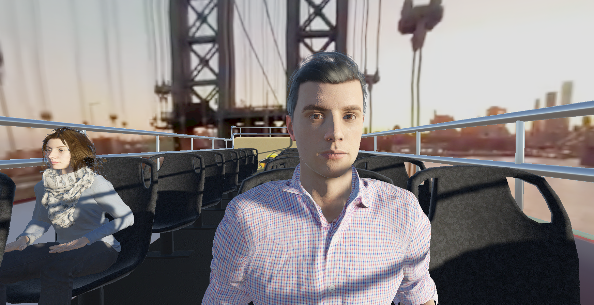
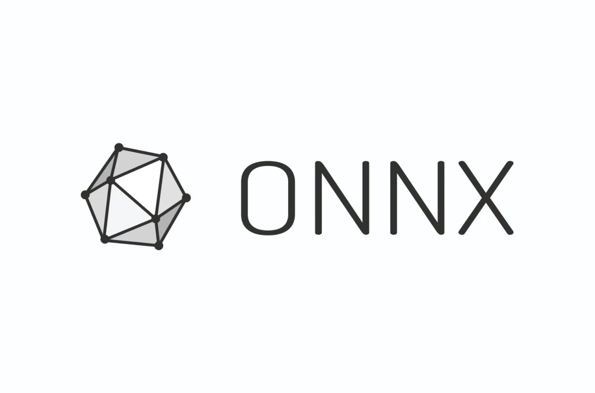

Drone & Missile Simulator (Unity)
Complete simulator with a custom multithreaded aerodynamic solver (per-vertex forces), autonomous drones trained with ML-Agents, and research-grade telemetry.
UnityPhysics SimulationML-AgentsC#
Unity Game Developer & XR Research Engineer
I build VR/AR applications, physics-based simulations, gameplay systems, and multiplayer experiences. My work centers on game development and XR research, with additional expertise in machine learning, generative AI, mobile optimization, and collaborations with Samsung and Coca-Cola.
XR & Games
VR/AR (Meta Quest, OpenXR), multiplayer, physics simulation
AI in Production
Sentis, ONNX Runtime, TensorFlow Lite, NNAPI, ML-Agents, generative-AI pipelines
Mobile Optimization
GLES/Vulkan, Android NDK, in-app benchmarking and telemetry
Complete simulator with a custom multithreaded aerodynamic solver (per-vertex forces), autonomous drones trained with ML-Agents, and research-grade telemetry.
Mobile-ready full-body motion prediction in VR with multiple inference back ends and an in-app benchmarking harness.
Interactive Cesium-powered viewer streaming photogrammetry as 3D Tiles with live museum metadata and an AI assistant, developed for the archaeological site of Kythnos.
Generative AI creates themed textures and auto-places artifacts based on semantic descriptions inside an immersive museum.

VR multiplayer application receiving live 360° video over 5G with real-time face anonymization and detailed network telemetry.

Python/C++ tooling to convert ONNX models to ANN for mobile AI runtimes plus a graphics harness for frame-time, thermal, and battery telemetry.
2022–2025
2024–2025
Unity 3D / C#, physics, multiplayer, simulations, gameplay systems
VR/AR (Meta Quest, Valve Index, OpenXR, Meta XR SDKs)
ML-Agents, Sentis, ONNX Runtime, TensorFlow Lite, NNAPI, generative-AI pipelines
GLES, Vulkan, Android NDK, optimization and telemetry
C++, Python, Git, CI/CD, data visualization
Cesium 3D Tiles, photogrammetry streaming
I’m open to remote roles in game development and XR research, delivering production-ready code through research-driven innovation and real-world industry experience.
Tel. +30 698 439 2304 • Greece (UTC+3)